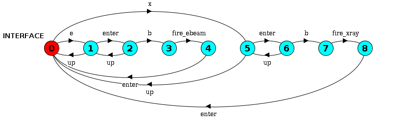
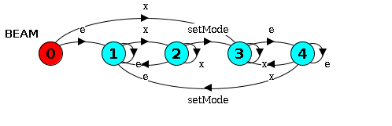
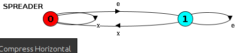
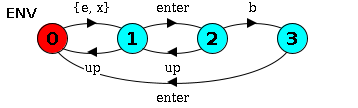
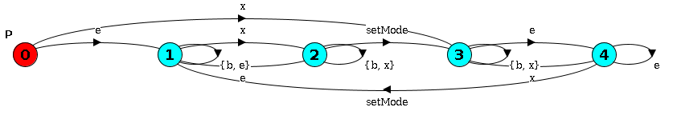
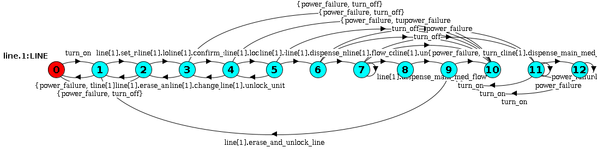
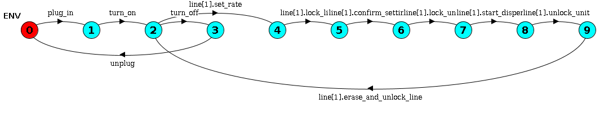

<2024-06-25 মঙ্গল>
We consider the three examples available with the paper. And we will evaluate whether it is feasible to express real systems formally using UML diagram.
Following is the sys.lts for voting system from a high level of abstraction.
EM = (password -> P1),
P1 = (select -> P2),
P2 = (vote -> P3 | back -> P1),
P3 = (confirm -> EM | back -> P2).
The following is the UML diagram for it.
Following is the environment definition, albeit simplified from high level of abstraction.
ENV = (v.enter -> VOTER | eo.enter -> EO),
VOTER = (password -> VOTER1),
VOTER1 = (select -> VOTER2),
VOTER2 = (vote -> VOTER3 | back -> VOTER1),
VOTER3 = (confirm -> v.exit -> ENV | omit_confirm -> v.exit -> ENV | back -> VOTER2),
EO = (select -> EO | vote -> EO | confirm -> EO | back -> EO | eo.exit -> ENV).
And its UML diagram is: 
While complex to look at, one can argue that the process flow itself is simple. So it can also be expressed via UML
The FSP notation for requirement of voting is very simple. The one who enters the password and the one who gives the vote should be the same person.
const NoBody = 0
const Voter = 1
const EO = 2
range WHO = NoBody..EO
P = VOTE[NoBody][NoBody][NoBody],
VOTE[in:WHO][sel:WHO][v:WHO] = (
v.enter -> VOTE[Voter][sel][v] | eo.enter -> VOTE[EO][sel][v]
| password -> VOTE[in][sel][in]
| select -> VOTE[in][in][v]
| when (sel == v) confirm -> VOTE[in][NoBody][NoBody]
).
But its corresponding UML is simply not human. 
It comprises of three parallel parts, each can be described separately and simply.
const IntNotSet = 0
const IntXray = 1
const IntEBeam = 2
range IntModeState = IntNotSet .. IntEBeam
INTERFACE = INTERFACE[IntNotSet],
INTERFACE[mode:IntModeState] = (x -> CONFIRM[IntXray] | e -> CONFIRM[IntEBeam]),
CONFIRM[mode:IntModeState] = (up -> INTERFACE | enter -> FIRE[mode]),
FIRE[mode:IntModeState] = (
when (mode == IntXray) b -> fire_xray -> enter -> INTERFACE
|
when (mode == IntEBeam) b -> fire_ebeam -> enter -> INTERFACE
|
up -> CONFIRM[mode]
).
BEAM = (x -> XRAY | e -> EBeam),
XRAY = (x -> XRAY | e -> ToEBeam),
ToEBeam = (setMode -> EBeam | x -> XRAY | e -> ToEBeam),
EBeam = (e -> EBeam | x -> ToXray),
ToXray = (setMode -> XRAY | e -> EBeam | x -> ToXray).
SPREADER = (e -> OUTPLACE | x -> SPREADER),
OUTPLACE = (e -> OUTPLACE | x -> SPREADER).
||SYS = (INTERFACE || BEAM || SPREADER).
The parallel parts can be separately described using UML.    It is easily doable in UML, as we can see above.
The environment defines user interaction. The user will select XRay or EBeam, continue or go back and finally press Enter.
ENV = (x -> ENV_1 | e -> ENV_1),
ENV_1 = (enter -> ENV_2 | up -> ENV),
ENV_2 = (b -> enter -> ENV | up -> ENV_1).
The corresponding UML is also very simple. 
The safety property defines different state of the spreader and the corresponding interface instruction and says that conflict should not occur.
const InPlace = 0
const OutPlace = 1
range SpreaderState = InPlace .. OutPlace
const NotSet = 2
const Xray = 3
const EBeam = 4
const ToXray = 5
const ToEBeam = 6
range BeamState = NotSet .. ToEBeam
P = P[InPlace][NotSet],
P[spreader:SpreaderState][power:BeamState] = (
when (power == NotSet || power == Xray || power == ToEBeam) x -> P[InPlace][Xray]
|
when (power == NotSet || power == EBeam || power == ToXray) e -> P[OutPlace][EBeam]
|
when (power == Xray || power == ToEBeam) e -> P[OutPlace][ToEBeam]
|
when (power == EBeam || power == ToXray) x -> P[InPlace][ToXray]
|
when (power == ToEBeam) setMode -> P[spreader][EBeam]
|
when (power == ToXray) setMode -> P[spreader][Xray]
|
when (power != NotSet && (spreader != OutPlace || power == EBeam || power == ToXray)) b -> P[spreader][power]
).
The UML is small but quite complex to understand. 
It is a complex and close to realistic system design.
//======================
// Constants and Ranges
//======================
//
// States of the pump alarm
//
const AlarmSilenced = 0
const AlarmSounds = 1
range AlarmState = AlarmSilenced .. AlarmSounds
//
// States of the pump settings
//
const ParamsNotSet = 2 // pump parameters not set yet
const ParamsSet = 3 // pump parameters already set
range ParamsStateT = ParamsNotSet .. ParamsSet
//
// Locked/unlocked states of a line with respect to a pump channel
//
const LineUnlocked = 4 // line not locked into a pump channel
const LineLocked = 5 // line locked into a pump channel
range LineLockStateT = LineUnlocked .. LineLocked
//
// Locked/unlocked states of the pump unit
//
const UnitUnlocked = 6 // the keypad of the pump is not locked
const UnitLocked = 7 // the keypad of the pump is locked
range UnitLockStateT = UnitUnlocked .. UnitLocked
//
//Plugged/unplugged states of the pump unit
//
const Unplugged = 8 //the pump is not plugged in
const Plugged = 9 //the pump is plugged in
range PluggedState = Unplugged .. Plugged
//
//Battery states of the pump unit
//
const BatteryCharge = 12 //the battery has charge
const BatteryLow = 11
const BatteryEmpty = 10 //battery has no charge
range BatteryState = BatteryEmpty .. BatteryCharge
//
//System State
//
const SystemOff = 13
const SystemOn = 14
range SystemState = SystemOff .. SystemOn
//=====================
// Alarm Definitions
//=====================
ALARM = ALARM[AlarmSilenced],
ALARM[alarm_state:AlarmState] =
(
when (alarm_state == AlarmSounds)
alarm_rings -> ALARM[alarm_state]
|
when (alarm_state == AlarmSounds)
alarm_silence -> ALARM[AlarmSilenced]
|
enable_alarm -> ALARM[AlarmSounds]
|
power_failure -> ALARM
).
//=====================
// Process Definitions
//=====================
//Initial Pump State
PUMP_POWER = POWERED[Unplugged][BatteryEmpty],
//Pump has power but not on -- keep track of whether there is any battery and plug state
POWERED[plug_state:PluggedState][battery_state:BatteryState] =
(
when (plug_state == Unplugged)
plug_in -> POWERED[Plugged][battery_state]
|
when (plug_state == Plugged)
unplug -> POWERED[Unplugged][battery_state]
|
when (battery_state != BatteryEmpty)
turn_on -> POWER_ON[plug_state][battery_state]
|
when (plug_state == Plugged && battery_state != BatteryCharge)
battery_charge -> POWERED[plug_state][battery_state+1]
),
//Pump is on
POWER_ON[plug_state:PluggedState][battery_state:BatteryState] =
(
when (plug_state == Plugged)
unplug -> POWER_ON[Unplugged][battery_state]
|
when (plug_state == Unplugged)
plug_in -> POWER_ON[Plugged][battery_state]
|
turn_off -> POWERED[plug_state][battery_state]
|
when (plug_state == Unplugged && battery_state == BatteryCharge)
battery_spent -> POWER_ON[plug_state][BatteryLow]
|
when (plug_state == Unplugged && battery_state == BatteryLow)
power_failure -> POWERED[Unplugged][BatteryEmpty]
|
when (plug_state == Plugged && battery_state != BatteryCharge)
battery_charge -> POWER_ON[plug_state][battery_state+1]
|
when (plug_state == Unplugged && battery_state == BatteryLow)
enable_alarm -> POWER_ON[plug_state][battery_state]
).
//
// Dispense complete
//
const Dispensing = 15
const DispenseDone = 16
range DispenseState = Dispensing .. DispenseDone
//=====================
// Process Definitions
//=====================
range NUM_LINE = 1..1
LINE = LINE[LineUnlocked],
LINE[lineLock:LineLockStateT] = (turn_on -> LINESETUP[ParamsNotSet][lineLock]),
//
//-Setupmode for the line
LINESETUP[params:ParamsStateT][lineLock:LineLockStateT] =
(
turn_off -> LINE[lineLock]
|
power_failure -> LINE[lineLock]
|
when (params == ParamsNotSet && lineLock == LineUnlocked)
set_rate -> LINESETUP[ParamsSet][lineLock]
|
when (params == ParamsSet && lineLock == LineUnlocked)
clear_rate -> LINESETUP[ParamsNotSet][lineLock]
|
when (params == ParamsSet && lineLock == LineUnlocked)
lock_line -> LINESETUP[params][LineLocked]
|
when (lineLock == LineLocked)
erase_and_unlock_line -> LINESETUP[params][LineUnlocked]
|
when (params == ParamsSet && lineLock == LineLocked)
confirm_settings -> LINEINFUSION[UnitUnlocked]
),
//
// Pump in infusion mode:
// - Always be able to turn the unit off, even if locked
// - Allow the user to lock/unlock the unit
// - Errors could occur with the pump (e.g., line became pinched or plugged)
//
LINEINFUSION[unitLock:UnitLockStateT] =
(
turn_off -> LINE[LineLocked]
|
power_failure -> LINE[LineLocked]
|
when (unitLock == UnitUnlocked)
change_settings -> LINESETUP[ParamsSet][LineLocked]
|
when (unitLock == UnitUnlocked)
lock_unit -> LINEINFUSION[UnitLocked]
|
when (unitLock == UnitLocked)
unlock_unit -> LINEINFUSION[UnitUnlocked]
|
when (unitLock == UnitLocked)
start_dispense -> DISPENSE[SystemOn][Dispensing]
),
DISPENSE[system_state:SystemState][dispense:DispenseState] =
(
dispense_main_med_flow -> DISPENSE[system_state][DispenseDone]
|
when (system_state == SystemOn && dispense == DispenseDone)
flow_complete -> unlock_unit -> LINESETUP[ParamsNotSet][LineLocked]
|
power_failure -> DISPENSE[SystemOff][Dispensing]
|
when (system_state == SystemOff)
turn_on -> LINESETUP[ParamsNotSet][LineLocked]
|
when (system_state == SystemOn)
turn_off -> LINE[LineLocked]
).
||LINES = (line[NUM_LINE]:LINE)/{
turn_on/line[NUM_LINE].turn_on,
turn_off/line[NUM_LINE].turn_off,
power_failure/line[NUM_LINE].power_failure}.
||SYS = (PUMP_POWER || ALARM || LINES).
And its UML is equally large. 
It only considers user interaction so it is simpler.
range LINES = 1..1
//
// Set of actions that the user of the LTSA tool can control in an
// animation of this model.
//
menu UserControlMenu = {
alarm_silence,
line[LINES].change_settings,
line[LINES].clear_rate,
line[LINES].confirm_settings,
line[LINES].erase_and_unlock_line,
line[LINES].lock_line,
line[LINES].lock_unit,
line[LINES].set_rate,
line[LINES].unlock_unit,
plug_in,
turn_off,
turn_on,
unplug
}
ENV = (plug_in -> turn_on -> CHOOSE),
CHOOSE = (line[i:LINES].set_rate -> RUN[i] | turn_off -> unplug -> ENV),
RUN[i:LINES] = (
line[i].lock_line -> line[i].confirm_settings -> line[i].lock_unit -> line[i].start_dispense ->
line[i].unlock_unit -> line[i].erase_and_unlock_line -> CHOOSE
)+{line[LINES].clear_rate, line[LINES].change_settings}.
The UML diagram is:  Simple.
The property is also simple because it builds upon original system design.
P = (line[1].set_rate -> RATE_SET | power_failure -> P),
RATE_SET = (line[1].set_rate -> RATE_SET | power_failure -> P | line[1].dispense_main_med_flow -> DISPENSE),
DISPENSE = (line[1].dispense_main_med_flow -> DISPENSE | line[1].flow_complete -> P | power_failure -> P).
The UML is: 
As we can see,
Simple systems can be explained but their requirements can't be explained formally via UML.
For complex systems, UML creates a hard to understand system.
We will now do literature review to provide support for our findings.